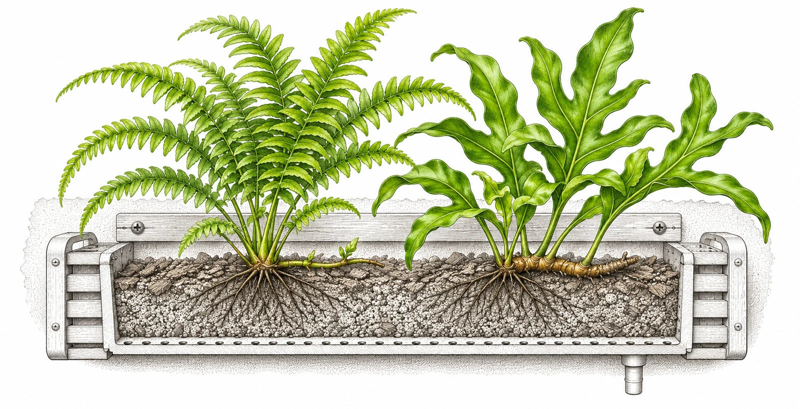
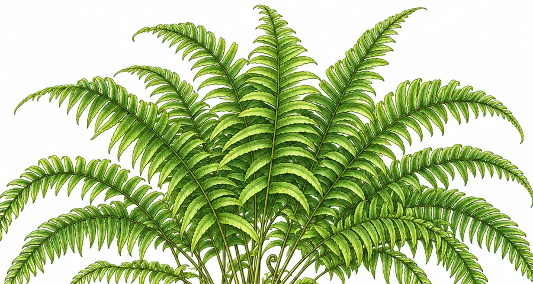
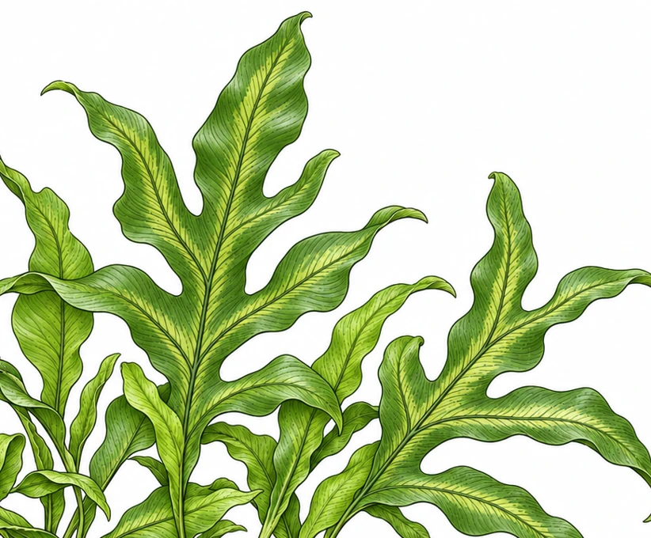

Proposed experiment At Lekki, both ferns grew on one oil palm. A wall planter gives their roots a shared, bounded space. Can both establish there?

Giant sword fern · Nephrolepis biserrata
Feathery fronds and spreading stolons.
Wart fern · Microsorum scolopendria
Lobed fronds on a creeping rhizome near the surface.
The drawing shows the starting arrangement. Root forms and holder proportions are illustrative.


Use 20 identical holders in four blocks. Each block contains all five treatments in random order. Tag each plant. Match starting stock within each species by rootball dimensions, frond count and span. Balance which species starts on the left.
Does the neighbour’s identity matter? Compare the sword fern in a mixed holder with the average sword fern in a two-sword holder. Repeat for wart fern against the two-wart holder. Starting density is equal.
What does crowding cost? Compare each same-species pair, per plant, with its single-species control. Average within each holder first. The four holders per treatment are the independent repeats.
Measure the delivered stock before choosing a trough. Select one internal size that accommodates the largest two starting rootballs without compression. Record usable medium depth and litres above the drainage layer. Use the same batch of medium, drainage outlet, starting moisture, irrigation volume and schedule across treatments. Record any rescue watering.
Two adjacent north-facing walls on the model tower, 48–52 m above ground, received different amounts of energy in a typical year.
Modelled annual incident solar energy · kWh/m²Use the lower-exposure face 59m as a candidate for a siting check. Log light at frond height across the proposed positions over several days, including sunny and overcast periods. Group positions with comparable daily light, then randomise within each group. Keep monitoring after planting.
Four equally weighted surface sensors per wall face on the unplanted 14D checkerboard tower, with balconies and 64 surrounding buildings. Lagos–Ikeja PVGIS typical meteorological year, based on 2005–2023 weather data. The model assumes north along +Y. The two readings describe incident energy at the wall. Fern-level photosynthetic light and temperature need their own measurements.
Eight source readings, source hash and means · Source sensor CSVAt planting, photograph each tagged crown against a ruler and mark its starting footprint. Each week record survival, new fronds, spread toward the neighbour, overlap and shading. Measure medium moisture at both ends at the same time before watering. Photograph the same covered root-view windows with covers briefly removed.
At week 12, compare each species’ growth and survival block by block. Record visible root occupancy by zone and mark interwoven roots of uncertain origin as unassigned. Flag a mixed holder if one species expands across its neighbour while that neighbour repeatedly loses fronds or falls behind its same-species controls. Four repeats support a first comparison. Long-term fit needs a longer trial.